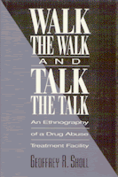

Contradictions in philosophy and practice in a residential drug abuse treatment facility
Contradictions in philosophy and practice in a residential drug abuse treatment facility


 Contradictions in philosophy and practice in a residential drug abuse treatment facility
Contradictions in philosophy and practice in a residential drug abuse treatment facility

|  |
Walk the Walk and Talk the TalkAn Ethnography of a Drug Abuse Treatment FacilityGeoffrey R. Skollcloth EAN: 978-0-87722-917-9 (ISBN: 0-87722-917-1) |
"Skoll cogently presents the often ludicrous contradictions in philosophy and practice which continually face both residents and staff. The double-binds, Catch-22s, and condemnation of almost all past behavior promotes a pathological conformism to the facility aptly reflect in the book's title."
—Dr. Jerome Beck, Public Health, Institute for Scientific Analysis
As a counselor for more than two years at a residential drug abuse treatment facility, Geoffrey Skoll observed the many contradictions between the public image of the institution as a center for therapy and the actual day-to-day practices that went on inside. In this case study, he argues that the facility forces its residents to "walk the walk and talk the talk" by compelling them to subscribe to its rules and ideology, which emphasize the need to conform to the image of a dope fiend in order to show "progress" in treatment. Skoll contends that facilities like this do not produce a positive change in the characters of their residents as claimed, but instead reinforce negative social identities, especially their powerlessness and subordinate status.
Skoll cites specific interactions that force residents to "snitch" on each other over petty misdemeanors in order to perpetuate negative identities, such as whore or addict. His analysis reveals that this treatment facility aims at thought reform and behavioral control rather than therapy, and he concludes that this approach confers the addict lifestyle for most of its patients.
Acknowledgments
1. Introduction
2. The Residents
3. The Counselors
4. The Political Economy
5. The Ideology
6. Talk the Talk
7. Conclusion
Notes
References
Index
Geoffrey R. Skoll teaches in the Anthropology/Sociology Department at the University of Wisconsin, Milwaukee.
Anthropology
Health and Health Policy
© 2015 Temple University. All Rights Reserved. This page: http://www.temple.edu/tempress/titles/848_reg.html.